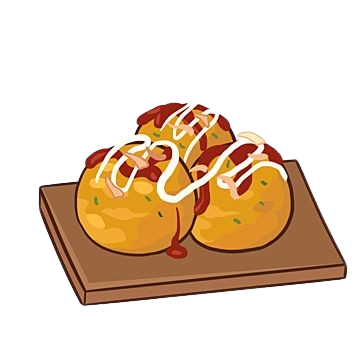

Takoyaki

Resep Membuat Takoyaki
Bahan Kulit
- 100 gram tepung terigu protein sedang
- 1 butir telur
- 1/2 sdt garam
- 300 ml air kaldu dashi (atau air biasa dengan sedikit bubuk kaldu ikan)
- 1 sdm kecap asin
- 1/2 sdm minyak goreng untuk olesan cetakan
Bahan isian
- 100 gram gurita rebus (bisa diganti sosis, udang, atau bakso kecil)
- 2 sdm daun bawang, cincang halus
- 2 sdm kol, cincang halus (opsional)
- Keju mozarella (opsional)
Pelengkap
- Saus takoyaki (atau saus okonomiyaki)
- Mayones
- serpihan ikan cakalang kering
- rumput laut bubuk
Cara Membuat Takoyaki
- Membuat Adonan:
- Campur tepung terigu, baking powder, dan garam.
- Masukkan telur, kecap asin, dan air kaldu secara perlahan sambil diaduk hingga adonan halus dan tidak bergerindil.
- Persiapkan Cetakan Takoyaki
- Panaskan cetakan takoyaki, oleskan minyak goreng hingga rata.
- Memasak Takoyaki
- Tuang adonan ke dalam lubang cetakan hingga hampir penuh.
- Masukkan isian (gurita, daun bawang, dan kol) ke tengah adonan.
- Setelah bagian bawah mengeras, putar bola takoyaki menggunakan tusuk sate atau sumpit. Biarkan hingga matang dan berbentuk bulat sempurna.
- Penyajian
- Angkat takoyaki dan tata di piring.
- Tambahkan saus takoyaki, mayones, taburan aonori, dan katsuobushi di atasnya.
Tips
- Adonan Cair: Adonan harus lebih cair dari adonan pancake untuk menghasilkan tekstur yang lembut di dalam.
- Minyak Secukupnya: Pastikan cetakan diolesi minyak dengan baik agar takoyaki mudah dibentuk dan tidak lengket.
- Putar Perlahan: Gunakan tusuk sate atau sumpit untuk memutar adonan agar bulat sempurna.